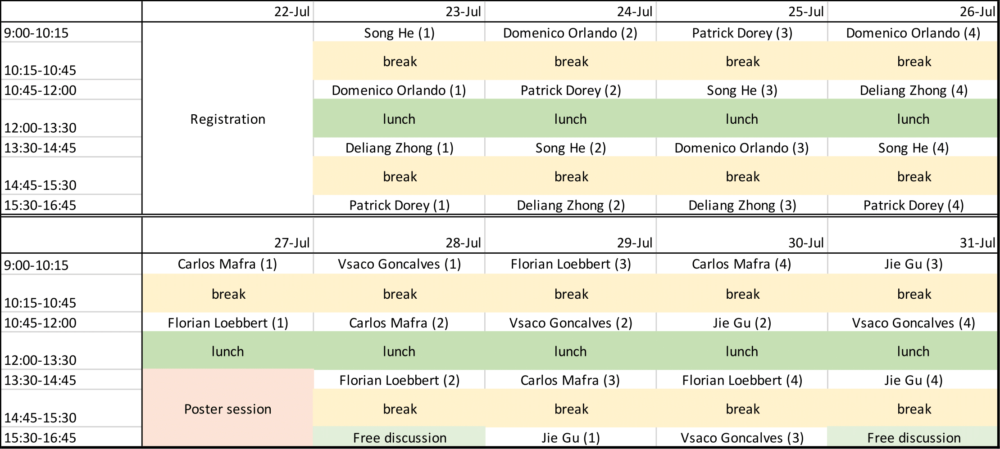

简介 (About the summer school)
This summer school is hosted by the Kavli Institute for Theoretical Sciences (KITS) of University of Chinese Academy of Sciences. The summer school aims at exposing students and postdocs to the frontiers in theoretical high energy physics and introducing to them the basic research techniques. The area is broadly quantum field theory and string theory. The topics include: Conformal field theory, scattering amplitudes, large charge expansion, integrability, QCD strings etc. The school consists of regular lectures and a poster session for interested students and postdocs.
本次暑期学校由中国科学院大学卡弗里理论科学研究所主办。目的是帮助学生与博士后接触到现代高能理论物理的研究前沿，并学习这些领域的基本的研究技巧。 本次的暑期学校的课程内容主要涉及量子场论与弦理论。具体包括的主题有：共形场论、散射振幅、大荷展开、可积性以及QCD弦论等。 本次暑期学校包括一些常规的系列讲座以及一次由学生与博士后参加的海报展示。
报告人 (Speakers)
- Patrick Dorey (Durham University) <\li>Title: <\li>Abstract:
- Vasco Goncalves (University of Porto)
- Title:
- Abstract:
- Jie Gu (Southeast University)
- Title:
- Abstract:
- Song He (Institute of Theoretical Physics, CAS)
- Title:
- Abstract:
- Florian Loebbert (University of Bonn)
- Title: Integrability for Feynman Integrals
- Abstract: Feynman integrals are crucial ingredients for calculations within quantum field theory and key to phenomenological predictions. A new tool for their investigation comes with the recent discovery of integrable structures for large families of Feynman graphs and the associated symmetry constraints. These constraints can be formulated in terms of the conformal Yangian and result in differential equations for the considered integrals. Here we give a pedagogical introduction to the Yangian symmetry of Feynman integrals and associated bootstrap approaches. We review connections to AdS/CFT integrability via the so-called fishnet theories and comment on the recent relation between Yangian symmetry and Calabi-Yau geometry for integrals in two spacetime dimensions.
- Carlos Mafra (University of Southampton)
- Title:
- Abstract:
- Domenico Orlando (INFN, Turin)
- Title:
- Abstract:
- Deliang Zhong (Imperial College, London)
- Title:
- Abstract:
会议日程 (Schedule)

申请 (Applying to the summer school)
The summer school is open for applications to advanced graduate students (must have taken courses in QFT and have some familiarity with CFTs and string theory) and postdocs.
Applications should be submitted via the QR code on the poster (or click here) and should include the following materials:
1. A brief CV (not required for faculty),
2. A publication list of 5 representative works (if any),
3. A recommendation letter from your advisor (not necessary for postdocs),
4. A one-page description of your poster presentation (if you wish to present).
These materials should be combined into a single pdf file in this order. The deadline of applications is June the 15th. Successful applicants will be informed in late June.
本次暑期学校面向的是高年级研究生（必须修过量子场论并对共形场论与弦论有一定的掌握）与博士后。申请需通过海报上的二维码（或者点击 这里）提交且应包含以下材料
1. 个人简历 (仅学生和博士后要求)，
2. 不超过5篇代表作列表（若有），
3. 导师签名的推荐信一封（博士后不要求），
4. 一页以内关于你想在海报中展示的工作内容（如果希望参与）。
请将以上内容按顺序合并成一个pdf文件。申请的截止日期为2024年6月15日。成功通过的申请者将于六月底通过邮件通知。
Financial support: The applicants are encouraged to have their own sources of funding to cover their expenses during the school.
However, students in financial difficulties may apply for support by indicating so in the application form.
The amount of funding is limited and can only cover a small number of students.
资助：一般情况下申请者须自己解决差旅与住宿的费用。对于有特别困难的学生，有一定的资助名额可以申请。
会议组织 (Summer school organization)
Organizers:
- Cheng Peng
- Konstantinos Rigatos
- Huajia Wang
- Zhefei Yu
- Fu-Chun Zhang
- Xinan Zhou
联系方式 (Contact us)
Any questions about the school should be sent to the main organizer: xinan.zhou at ucas.ac.cn .
任何关于暑期学校的问题请发送至组织者的邮箱：xinan.zhou at ucas.ac.cn